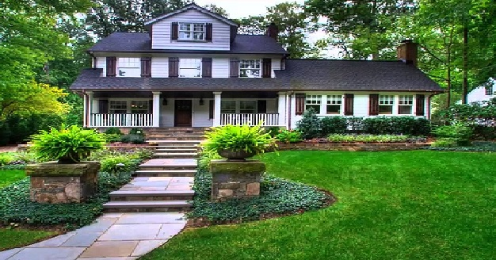
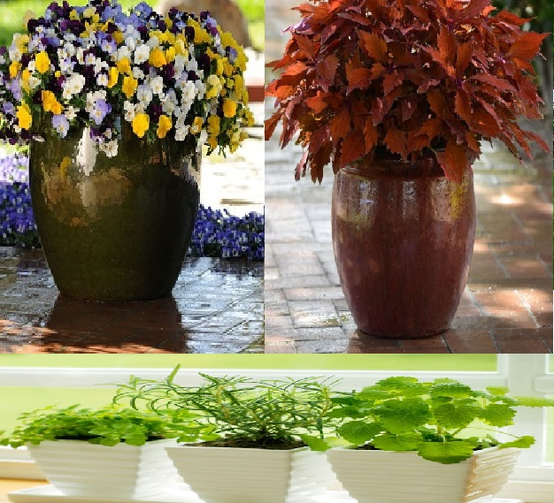
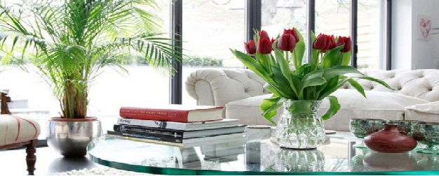
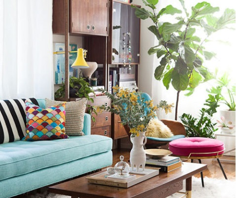
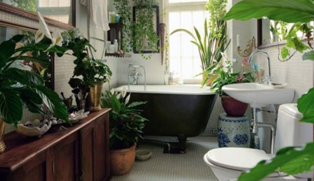
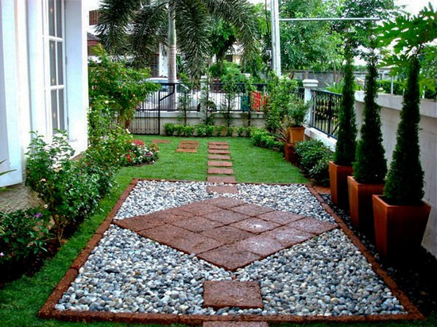
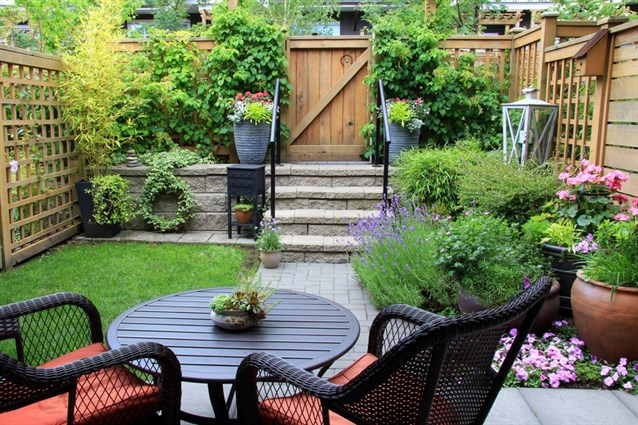

منزلك خطوة ..بـخطوة


نبذه عامه عن
اعمال فريقنا

بتصميم فريق كبير من الاشخاص لتصميم وتنسيق النباتات المنزليه الداخليه والخارجيه ونباتات الاصص وحدائق المنزل ولا ينحسر تخصص فريقنا فقط عند زراعه النباتات المنزليه ولاكن باعتبار كلمه نباتات فمنها حدائق كبيره ونباتات مدخل المنزل والحدائق العامه علي ارقي مستوي من التصميمات الهندسيه وتنسيق النباتات ..
تُكون كل مجموعه من الفريق من مهندس ديكور علي خبره عاليه في مجال التصميمات الهندسيه للحدائق ومشرف لتنسيق النباتات ووضعها في اماكنها المناسبه بها وعدة من الاشخاص العاملين نحن نحرص علي رعايه النباتات حتى تظهر لك بالشكل المنشود والمتفق عليه نحن نقدم لك اقتراح بالتصميم المناسب وماعليك الا بالموافقه او تقديم حلول اخري ..ونقدم لك كل انواع النباتات البريه والورود العطريه والاشجار ونخيلات الزينه كـ منتج عام باسعار متطابقه مع اسعار الاخرين والسوق العام للنباتات المنزليه المتوفره منها وقليله التوافر , ونحرص علي مدك بـ ارشادات ونصائح كيفيه رعايتها والمحافظه عليها كما يجيدون تصميم ارضيات وتنسيق الاشجار في مدخل المنزل بشكل مبهر كل هذا باقل التكاليف انت من ستتحكم في تكاليفك وكل شئ متفق عليه حسب تكاليف المنتجات المستهلكه واداره الفريق في تنسيقها نكون حريصين كل الحرص ان نقدم لك الخدمه المناسبه بتكاليف تناسبك ايضا فذلك قبل ان يكون عمل بصفه عامه فهو محافظه علي البيئه بشكل جزري وكلما كبرت حجم الرقعه الخضراء كان ذلك مقابله نقاء للهواء والبيئه وصفاء للنفس وارتخاء للذهن بعد مشقه الحياه
وسنعرض امام سيادتكم في هذا الموضوع نبذه
عامه مختصره عن اعمال فريقنا
يمكنك التفرع الي الموضوع بشكل متوسع بآلنقر عليه
اولاً :نباتات الاصص
آصص آلنبـآتـآت

ثـآنيـاً : النباتات الداخليه
مختصر عن النباتات المنزليه



ثـآلثـاً ألاعمال الخارجيه
مدخل حديقه المنزل


للآتصآل ع آلآرقام التاليه ، او قم بالضغط ع اتصل بنآ ورآسلنآ عبر البريد الالكتروني
يمكنك متابعه اعماالنا عبر مواقع التواصل الاجتماعى
هاتف: 01018424640
بريد-إلكتروني: 3aziz.elnafs@gmail.com
Facebook:

twiter:

instagram:
.png)